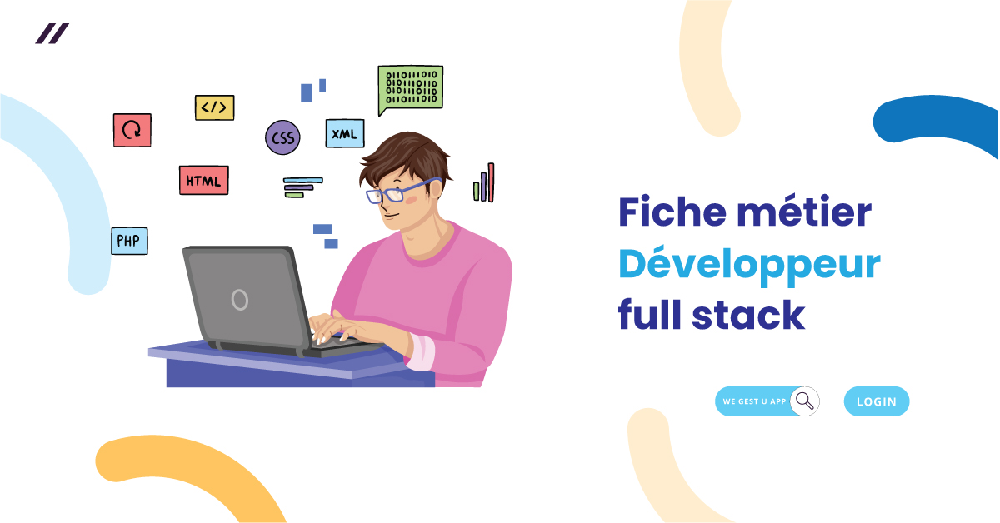

Un développeur full-stack est un professionnel capable de travailler à la fois sur le front-end et le back-end d'une application ou d'un site web. En d'autres termes, un développeur full-stack a des compétences dans le développement des deux parties d'une application web : la partie visible par les utilisateurs (front-end) et la partie qui gère les données et la logique serveur (back-end).
 Retour à la page d'accueil